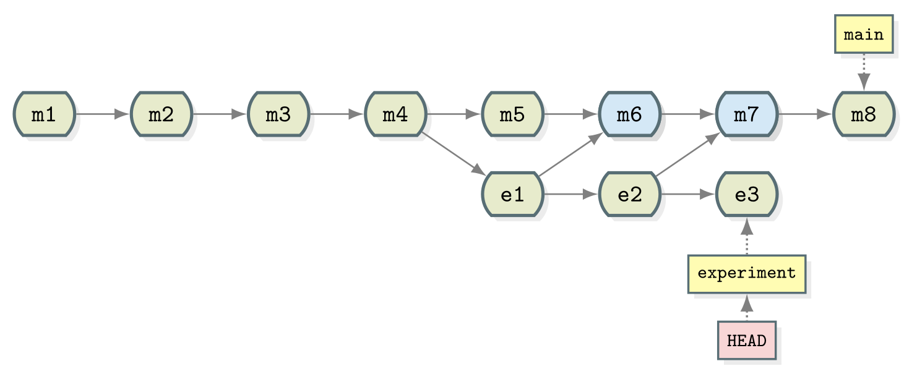
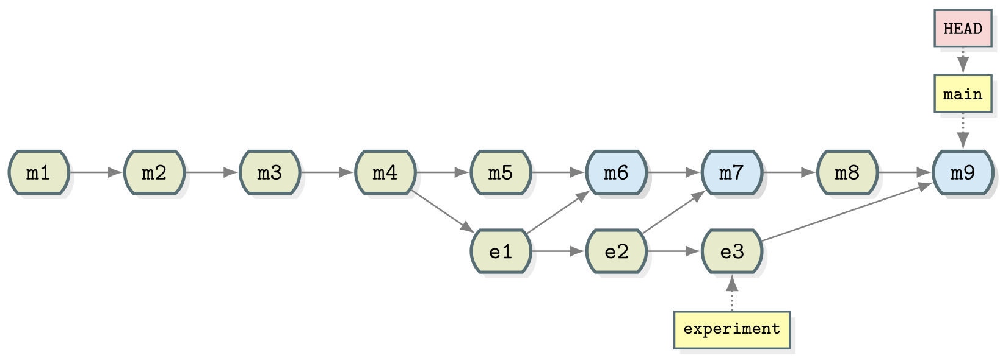
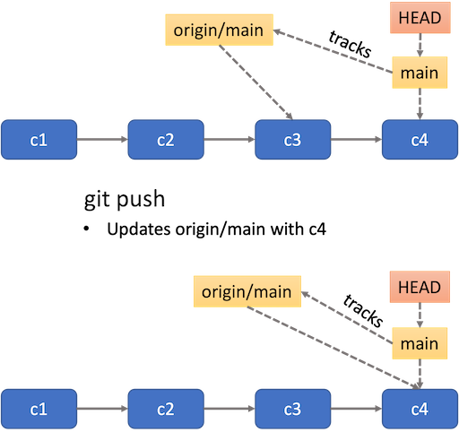
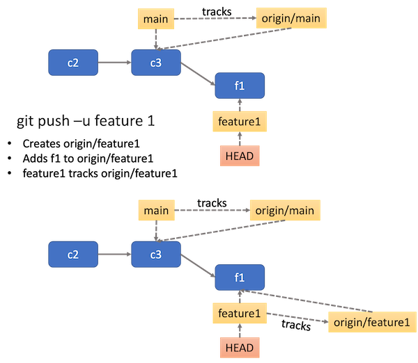
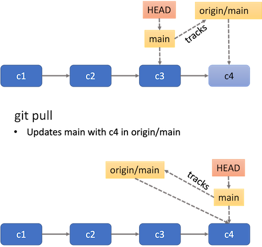
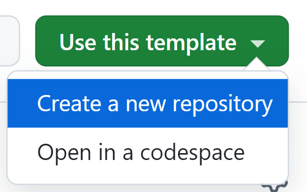

Content from Course overview
Last updated on 2025-10-16 | Edit this page
Overview
Questions
- What will this course cover?
- In what lesson-style is this course delivered?
Objectives
- Provide background information on course.
Overview
This course builds on the Introduction
to using Git and GitHub for software development course. While it is
not a requirement to have completed the introductory course, basic
familiarity with using Git from the command line is assumed. (Don’t
worry if you’re rusty!) You should also have a copy of the
recipe repository locally. If not, please refer to
[the setup instructions][lesson-setup].
This course introduces some of the intermediate-level functionality of Git and GitHub. In addition to providing you with a more thorough understanding of Git and how to use it to improve your workflow, we will teach about the features of Git and GitHub that allow you to effectively collaborate with others.
We provide a handout sheet for this course with a glossary of terms and a list of common Git commands. You may want to download this as a reference for later.
Learning outcomes
After completing this workshop, you should be able to:
- Use Git branches to manage parallel development of multiple features
- Rewrite your Git history, by undoing changes and rebasing your work onto another branch
- Push to and pull from a remote repository
- Create a fork of a repository on GitHub
- Create a pull request (PR) from within the same repo or a fork, request a review and respond to reviewer comments
- Provide a helpful code review to others
- Use GitHub Actions as a Continuous Integration (CI) system to ensure contributed code meets agreed standards
- Understand semantic versioning
- Create a new tag with Git and push it to a remote
- Create a new release of your software on GitHub
Delivery of the course
Material will be delivered as a lecture with task following the Carpentries teaching style.
- The instructor will walk you through the theoretical material of the course, demonstrating the execution of the relevant code and instructions. You are highly encouraged to code along and execute the instructions at the same time.
- Throughout the lessons, there are yellow boxes highlighting particularly challenging or important concepts.
- There are also exercises in orange boxes. The instructor will give you time to try to do them yourself before going through the solution. This is often available in a folded part of the orange box, so you can check it at any time.
- When doing exercises, put a green sticker in your computer whenever you are done, or a pink/orange one if you need support. A helper will go to you.
- For online sessions, raise your hand if you are done with the exercise and write any questions or problems directly into the chat, so a helper can try to solve it.
- Code along with the presenter.
- Ask questions!
Content from Collaborating with Git and GitHub
Last updated on 2025-10-16 | Edit this page
Overview
Questions
- How does collaborative working differ from individual working?
- What are the challenges of working collaboratively with Git?
Objectives
- Explain some challenges and benefits of collaborative working
Working in a Team
Collaborating effectively as part of team brings additional challenges and opportunities compared to solo development.
Each of these examples will be shown again in a subsequent section.
Differing Goals and Objectives
Developer 1 - “I need a new type of analysis to finish my thesis”
Developer 2 - “My problem is bigger. I need better performance to process all my data”
Even when working independently you might find you need to need to work on different things at different times. This is greatly compounded however when you have multiple developers all wanting to contribute to the same Git repository.
We will see how Git allows you to have multiple simultaneous streams of work via branching and merging. You can use branches to organise your individual work and as a way to ensure your Git history doesn’t clash with other contributors. The ability to merge branches even supports working on the same part of the code as somebody else so you can work on whatever you want and worry about sorting out conflicts later.
Access and Permissions
Developer 1 - “Just email me your changes. I’ll save them into the master copy.”
Developer 2 - “Ok… so why do all of my changes have to go through you?”
An important practical consideration is where to store the code that you’re collaborating on. Usually you want everyone’s contributions to end up in one place and that place only being accessible by a particular individual is unsustainable. On the other hand you do need to be able to control how contributions are made.
Hosting your code on GitHub allows configuration of user access and granular permissions. This allows shared responsibility and the clear definition of roles within a project.
Need to Coordinate Efforts
Developer 1 - “I’m still waiting on those changes to the data analysis workflow.”
Developer 2 - “Huh? I added those a month ago.”
Successfully coordinating the efforts of multiple contributors is a key challenge to avoid delay and duplication of work. GitHub can help here via Issues that track planned, on-going and completed work and who is doing it.
Different Points of View
Developer 1 - “Here’s what I’ve been working on for the last month.”
Developer 2 - “Hmmm… if we tweak things here then it might be faster.”
Two heads, as they say, are better than one and writing software is no exception. There is no greater benefit to collaboration than being able to pick someone else’s brain about a problem. In software development this is usually called peer review and it’s considered good practice for all code to be independently looked over.
GitHub provides functionality for peer review via Pull Requests.
Individual styles and preferences
Developer 1 - “Tabs!”
Developer 2 - “Spaces!”
Developer 1 - “TABS!”
Developer 2 - “SPACES!”
Whilst it may seem trivial the tabs vs. spaces controversy is a long standing debate. A quick google search will reveal any number of discussions on the topic. Ultimately, it doesn’t matter, but trouble can arise when everyone follows their own preference and you end up with a messy combination. The same logic applies in many places - consistency is king!
To get around these sorts of issues it’s a good idea to make a choice and then automatically enforce it. GitHub Actions is a Continuous Integration system that can be used to automate many kinds of checks to ensure a consistent set of preferences or standards for all code.
Summary
Coding as a team presents a number of challenges and opportunities. Both Git and GitHub were specifically designed to help you mitigate those challenges and embrace those opportunities. In the rest of this course we’ll be looking in detail at the range of functionality that is touched on above.
- Collaborative working poses additional challenges compared to individual working
- Git and GitHub provide powerful tools to help teams to work together
Content from Branching and merging
Last updated on 2025-10-16 | Edit this page
Overview
Questions
- How can I or my team work on multiple features in parallel?
- How can changes from parallel tracks of work be combined?
Objectives
- Explain what git branches are and when they should be used
- Use a branch to develop a new feature
- Identify the branches in a project and which branch is currently in use
- Explain what merging is
- How to incorporate a feature from a branch into your code
- Describe a scalable workflow for development with git
Motivation for branches
Differing Goals and Objectives
Developer 1 - “I need a new type of analysis to finish my thesis”
Developer 2 - “My problem is bigger. I need better performance to process all my data”
For simple projects, working with a single branch where you keep
adding commits is good enough. But chances are that you will want to
unleash all the power of git at some point and start using
branches.
In a linear history, we have something like:
 {alt=‘Linear’ class=“img-responsive”}
{alt=‘Linear’ class=“img-responsive”}
- Commits are depicted here as little boxes with abbreviated hashes.
- Here the branch
mainpoints to a commit. - “HEAD” is the current position (remember the recording head of tape recorders?).
- When we talk about branches, we often mean all parent commits, not only the commit pointed to.
Now we want to do this
Software development is often not linear:
- We typically need at least one version of the code to “work” (to compile, to give expected results, …).
- At the same time we work on new features – possibly several features concurrently. Often they are unfinished.
- We need to be able to easily separate out work on different features.
The strength of version control is that it permits the researcher to isolate different tracks of work, which can later be merged to create a composite version that contains all changes:
 {alt=‘Git collaborative’ class=“img-responsive”}
{alt=‘Git collaborative’ class=“img-responsive”}
- We see branching points and merging points.
- Main line development is often called
main. - Other than this convention there is nothing special about
main, it is just a branch. - Commits form a directed acyclic graph (arrows point from parent commits to child commits).
- Commits are relative to the preceding (parent)
commit. Whilst Git can be described as taking “snapshots” of your
project this is slightly misleading. Git actually records the
changes made since the last commit. The difference is subtle but
powerful, it makes commands like
git revertpossible.
A group of commits that create a single narrative are called a branch. There are different branching strategies, but it is useful to think that a branch tells the story of a feature, e.g. “fast sequence extraction” or “Python interface” or “fixing bug in matrix inversion algorithm”.
Starting point
Navigate to your recipe directory, containing the
guacamole recipe repository.
If you then type git log --oneline, you should see
something like:
OUTPUT
ddef60e (HEAD -> main, origin/main) Revert "Added instruction to enjoy"
8bfd0ff Added 1/2 onion to ingredients
2bf7ece Added instruction to enjoy
ae3255a Adding ingredients and instructionsWhich Branch Are We Using?
To see where we are (where HEAD points to) use
git branch:
commands, sh git branch
OUTPUT
* main- This command shows where we are, it does not create a branch.
- There is only
mainand we are onmain(star represents theHEAD).
In the following we will learn how to create branches, how to switch between them and how to merge changes from different branches.
A useful alias
We will now define an alias in Git, to be able to nicely visualise branch structure in the terminal without having to remember a long Git command (more details about what aliases are can be found here and the full docs on how to set them up in Git are here):
commands, sh git config --global alias.graph "log --all --graph --decorate --oneline"
Creating and Working with Branches
Firstly let’s take stock of the current state of our repository:
commands, sh git graph
OUTPUT
* ddef60e (HEAD -> main, origin/main) Revert "Added instruction to enjoy"
* 8bfd0ff Added 1/2 onion to ingredients
* 2bf7ece Added instruction to enjoy
* ae3255a Adding ingredients and instructionsWe have four commits and you can see that we are working on the main
branch from HEAD -> main next to the most recent commit.
This can be represented diagrammatically:
{alt=‘Git collaborative’ class=“img-responsive”}
Let’s create a branch called experiment where we try out
adding some coriander to ingredients.md.
git branch experiment
git graphOUTPUT
* ddef60e (HEAD -> main, origin/main, experiment) Revert "Added instruction to enjoy"
* 8bfd0ff Added 1/2 onion to ingredients
* 2bf7ece Added instruction to enjoy
* ae3255a Adding ingredients and instructionsNotice that the name of our new branch has appeared next to latest commit. HEAD is still pointing to main however denoting that we have created a new branch but we’re not using it yet. This looks like:
 {alt=‘Git
collaborative’ class=“img-responsive”}
{alt=‘Git
collaborative’ class=“img-responsive”}
To start using the new branch we need to check it out:
commands, sh git switch experiment git graph
OUTPUT
* ddef60e (HEAD -> experiment, origin/main, main) Revert "Added instruction to enjoy"
* 8bfd0ff Added 1/2 onion to ingredients
* 2bf7ece Added instruction to enjoy
* ae3255a Adding ingredients and instructionsNow we see HEAD -> experiment next to the top commit
indicating that we are now working with, and any commits we make will be
part of the experiment branch. As shown before which branch
is currently checked out can be confirmed with
git branch.
 {alt=‘Git
collaborative’ class=“img-responsive”}
{alt=‘Git
collaborative’ class=“img-responsive”}
Now when we make new commits they will be part of the
experiment branch. To test this let’s add 1 tbsp coriander
to ingredients.md. Stage this and commit it with the
message “try with some coriander”.
commands, sh git stage ingredients.md git commit -m "try with some coriander" git graph
OUTPUT
* 96fe069 (HEAD -> experiment) try with some coriander
* ddef60e (origin/main, main) Revert "Added instruction to enjoy"
* 8bfd0ff Added 1/2 onion to ingredients
* 2bf7ece Added instruction to enjoy
* ae3255a Adding ingredients and instructions {alt=‘Git
collaborative’ class=“img-responsive”}
{alt=‘Git
collaborative’ class=“img-responsive”}
Note that the main branch is unchanged whilst a new commit (labelled
e1) has been created as part of the experiment branch.
As mentioned previously, one of the advantages of using branches is
working on different features in parallel. You may have already spotted
the typo in ingredients.md but let’s say that we’ve only
just seen it in the midst of our work on the experiment
branch. We could correct the typo with a new commit in
experiment but it doesn’t fit in very well here - if we
decide to discard our experiment then we also lose the correction.
Instead it makes much more sense to create a correcting commit in
main. First, switch to the main branch:
commands, sh git switch main
Then fix the typing mistake in ingredients.md. And
finally, commit that change (hint: ‘avo’ look at the first
ingredient):
commands, sh git stage ingredients.md git commit -m "Corrected typo in ingredients.md" git graph
OUTPUT
* d4ca89f (HEAD -> main) Corrected typo in ingredients.md
| * 96fe069 (experiment) try with some coriander
|/
* ddef60e (origin/main) Revert "Added instruction to enjoy"
* 8bfd0ff Added 1/2 onion to ingredients
* 2bf7ece Added instruction to enjoy
* ae3255a Adding ingredients and instructions {alt=‘Git collaborative’ class=“img-responsive”}
{alt=‘Git collaborative’ class=“img-responsive”}
Merging
Now that we have our two separate tracks of work they need to be
combined back together. We should already have the main
branch checked out (double check with git branch). The
below command can then be used to perform the merge.
commands, sh git merge --no-edit experiment
OUTPUT
Auto-merging ingredients.md
Merge made by the 'ort' strategy.
ingredients.md | 1 +
1 file changed, 1 insertion(+)now use:
commands, sh git graph
OUTPUT
* 40070a5 (HEAD -> main) Merge branch 'experiment'
|\
| * 96fe069 (experiment) try with some coriander
* | d4ca89f Corrected typo in ingredients.md
|/
* ddef60e (origin/main) Revert "Added instruction to enjoy"
* 8bfd0ff Added 1/2 onion to ingredients
* 2bf7ece Added instruction to enjoy
* ae3255a Adding ingredients and instructions {alt=‘Git collaborative’ class=“img-responsive”}
{alt=‘Git collaborative’ class=“img-responsive”}
Merging creates a new commit in whichever branch is being merged into that contains the combined changes from both branches. The commit has been highlighted in a separate colour above but it is the same as every commit we’ve seen so far except that it has two parent commits. Git is pretty clever at combining the changes automatically, combining the two edits made to the same file for instance. Note that the experiment branch is still present in the repository.
Now you try
As the experiment branch is still present there is no reason further
commits can’t be added to it. Create a new commit in the
experiment branch adjusting the amount of coriander in the
recipe. Then merge experiment into main.  {alt=‘Gitcollaborative’ class=“img-responsive”}
{alt=‘Gitcollaborative’ class=“img-responsive”}
git switch experiment
# make changes to ingredients.md
git stage ingredients.md
git commit -m "Reduced the amount of coriander"
git switch main
git merge --no-edit experiment
git graphOUTPUT
* 567307e (HEAD -> main) Merge branch 'experiment'
|\
| * 9a4b298 (experiment) Reduced the amount of coriander
* | 40070a5 Merge branch 'experiment'
|\ \
| |/
| * 96fe069 try with some coriander
* | d4ca89f Corrected typo in ingredients.md
|/
* ddef60e (origin/main) Revert "Added instruction to enjoy"
* 8bfd0ff Added 1/2 onion to ingredients
* 2bf7ece Added instruction to enjoy
* ae3255a Adding ingredients and instructionsSummary
Let us pause for a moment and recap what we have learned:
SH
git branch # see where we are
git branch <name> # create branch <name>
git switch <name> # switch to branch <name>Since the following command combo is so frequent:
There is a shortcut for it:
Typical workflow
These commands can be used in a typical workflow that looks like the below:
SH
$ git switch -c new-feature # create branch, switch to it
$ git commit # work, work, work, ...
# test
# feature is ready
$ git switch main # switch to main
$ git merge new-feature # merge work to main
$ git branch -d new-feature # remove branch- Git allows non-linear commit histories called branches
- A branch can be thought of as a label that applies to a set of commits
- Branches can and should be used to carry out development of new features
- Branches in a project can be listed with
git branchand created withgit branch branch_name - The
HEADrefers to the current position of the project in its commit history - The current branch can be changed using
git switch branch_name - Once a branch is complete the changes made can be integrated into
the project using
git merge branch_name - Merging creates a new commit in the target branch incorporating all of the changes made in a branch
Content from Merge conflicts
Last updated on 2025-10-16 | Edit this page
Overview
Questions
- What is a merge conflict?
- How do I resolve a merge conflict?
Objectives
- Know what a merge conflict is
- Know how to abort a merge in the case of a conflict
- Know how to resolve a merge conflict by manually editing the conflicting file or files
Merge conflicts
Whilst Git is good at automatic merges it is inevitable that situations arise where incompatible sets of changes need to be combined. In this case it is up to you to decide what should be kept and what should be discarded.
Let’s try this by artificially creating a conflict:
commands, sh git switch main # change line to 1 tsp salt in ingredients.md git stage ingredients.md git commit -m "Reduce salt" git switch experiment # change line to 3 tsp salt in ingredients.md git stage ingredients.md git commit -m "Added salt to balance coriander" git graph
OUTPUT
* d5fb141 (HEAD -> experiment) Added salt to balance coriander
| * 7477632 (main) Reduce salt
| * 567307e Merge branch 'experiment'
| |\
| |/
|/|
* | 9a4b298 Reduced the amount of coriander
| * 40070a5 Merge branch 'experiment'
| |\
| |/
|/|
* | 96fe069 try with some coriander
| * d4ca89f Corrected typo in ingredients.md
|/
* ddef60e (origin/main) Revert "Added instruction to enjoy"
* 8bfd0ff Added 1/2 onion to ingredients
* 2bf7ece Added instruction to enjoy
* ae3255a Adding ingredients and instructions
{alt=‘Git collaborative’ class=“img-responsive”}Now we try and merge experiment into
main:
commands, sh git switch main git merge --no-edit experiment
OUTPUT
Auto-merging ingredients.md
CONFLICT (content): Merge conflict in ingredients.md
Automatic merge failed; fix conflicts and then commit the result.As suspected we are warned that the merge failed. This puts Git into
a special state in which the merge is in progress but has not been
finalised by creating a new commit in main. Fortunately
git status is quite useful here:
commands, sh git status
OUTPUT
On branch main
Your branch is ahead of 'origin/main' by 6 commits.
(use "git push" to publish your local commits)
You have unmerged paths.
(fix conflicts and run "git commit")
(use "git merge --abort" to abort the merge)
Unmerged paths:
(use "git add <file>..." to mark resolution)
both modified: ingredients.md
no changes added to commit (use "git add" and/or "git commit -a")This suggests how we can get out of this state. If we want to give up
on this merge and try it again later then we can use
git merge --abort. This will return the repository to its
pre-merge state. We will likely have to deal with the conflict at some
point though so may as well do it now. Fortunately we don’t need any new
commands. We just need to edit the conflicted file into the state we
would like to keep, then add and commit as usual.
Let’s look at ingredients.md to understand the conflict:
* 2 avocados
* 1 lime
<<<<<< HEAD
* 1 tsp salt
=======
* 3 tsp salt
>>>>>> experiment
* 1/2 onion
* 1 tbsp corianderGit has changed this file for us and added some lines which highlight
the location of the conflict. This may be confusing at first glance (a
good editor may add some highlighting which can help), but you are
essentially being asked to choose between the two versions presented.
The tags <<<<<<< HEAD,
======= and
>>>>>>> experiment are used to
indicate which branch each version came from (HEAD here corresponds to
main as that is our checked out branch).
The conflict makes sense, we can either have 1 tsp of salt or 3.
There is no way for Git to know which it should be so it has to ask you.
Let’s resolve it by choosing the version from the main branch. Edit
ingredients.md so it looks like:
* 2 avocados
* 1 lime
* 1 tsp salt
* 1/2 onion
* 1 tbsp corianderNow stage, commit and check the result:
commands, sh git stage ingredients.md git commit --no-edit git graph
OUTPUT
* e361d2b (HEAD -> main) Merge branch 'experiment'
|\
| * d5fb141 (experiment) Added salt to balance coriander
* | 7477632 Reduce salt
* | 567307e Merge branch 'experiment'
|\|
| * 9a4b298 Reduced the amount of coriander
* | 40070a5 Merge branch 'experiment'
|\|
| * 96fe069 try with some coriander
* | d4ca89f Corrected typo in ingredients.md
|/
* ddef60e (origin/main) Revert "Added instruction to enjoy"
* 8bfd0ff Added 1/2 onion to ingredients
* 2bf7ece Added instruction to enjoy
* ae3255a Adding ingredients and instructions
{alt=‘Git collaborative’ class=“img-responsive”}Now you try
You should now be on the main branch. Try creating
another merge conflict of your own and resolving it.
You will need to follow these steps:
- Create a new branch and check it out (e.g. called
experiment2) - Commit a change to this branch
- Check out the
mainbranch again - Make and commit a change that is incompatible with the previous one (e.g. modify the same line in a different way)
- Attempt to merge your topic branch
(e.g.
experiment2) - Resolve any merge conflicts and finalise the merge with
git commit - Confirm for yourself that the merge has completed with
git graph
NB: If the two sets of changes you made aren’t incompatible (e.g. you changed separate parts of the file) you will not get a merge conflict!
git switch -c experiment2
# make changes to ingredients.md (say 1/2 lime)
git stage ingredients.md
git commit -m "Reduced lime"
git switch main
# make changes to the same line in ingredients.md (say 1/4 lime)
git stage ingredients.md
git commit -m "Reduce lime to balance coriander"
git merge --no-edit experiment2This should give rise to a merge conflict:
OUTPUT
Auto-merging ingredients.md
CONFLICT (content): Merge conflict in ingredients.md
Automatic merge failed; fix conflicts and then commit the result.Resolve the conflicts. Then stage the file again, and view the graph:
git stage ingredients.md
git commit
git graphSummary
Let us pause for a moment and summarise what we have learned:
- You might come across situations where incompatible sets of changes need to be combined.
- If you don’t want to perform a merge (or try it again later) then
you can use
git merge --abort. - To resolve a merge conflict, edit the conflicted file into the state that you would like to keep, then stage and commit it.
- In the conflicted file, the tags
<<<<<<< HEAD,=======and>>>>>>> branch-nameindicate which branch each version came from.
- Merge conflicts result when Git fails to merge files automatically because of mutually incompatible changes
- Merge conflicts must be resolved by manually editing files to specify the desired changes
- After resolving a merge conflict you must finalise the merge with
git stageandgit commit
Content from Rewriting history with Git
Last updated on 2025-10-16 | Edit this page
Overview
Questions
- How can multiple collaborators work efficiently on the same code?
- When should I use rebasing, merging and stashing?
- How can I reset or revert changes without upsetting my collaborators?
Objectives
- Understand the options for rewriting git history
- Know how to use them effectively when working with collaborators
- Understand the risks associated with rewriting history
Rewriting history with Git
While version control is useful to keep track of changes made to a piece of work over time, it also lets you to modify the timeline of commits. There are several totally legitimate reasons why you might want to do that, from keeping the commit history clean of unsuccessful attempts to do something to incorporate work done by someone else.
There are a number of reasons why you may need to change your commit history, for example:
- You have already made a commit, but realise there are other changes you forgot to include
- You made a commit, but then changed your mind and want to remove this change from your history
- You want to “move” one or more commits so they are based on top of
some other work (e.g. new changes made to the
mainbranch)
This episode explores some of the commands git offers to
manipulate the commit history for your benefit and that of your
collaborators. But, first, we will look at another useful command.
Set aside your work safely with stash
It is not rare that, while you are working on some feature, you need to check something else in another branch. Very often this is the case when you want to try some contributor’s code as part of a pull request review process (see next episodes). You can commit the work you are doing, but if it is not in a state ready to be committed, what would you do? Or you start working on a branch only to realise that it is not the one that you were planning to work on?
git stash is the answer. It lets you put your current,
uncommitted work aside in a special state, turning the working directory
back to the way it was in the last commit. Then, you can easily switch
branches, pull new ones or do whatever you want. Once you are ready to
go back to work, you can recover the stashed work and continue as if
nothing had happened.
The following are the git stash commands needed to make
this happen:
Stash the current state of the repository, giving some message to remind yourself what was this about. The working directory becomes identical to the last commit.
commands, sh git stash save "Some informative message"
List the stashes available in reverse chronological order (last one stashed goes on top).
commands, sh git stash list
Extract the last stash of the list, updating the working directory with its content.
commands, sh git stash pop
Extract the stash with the given number from the list, updating the working directory with its content.
commands, sh git stash pop stash@{NUMBER}
Apply the last stash without removing it from the list, so you can apply it to other branches, if needed.
commands, sh git stash apply
Apply the given stash without removing it from the list, so you can apply it to other branches, if needed.
commands, sh git stash apply stash@{NUMBER}
If you want more information, you can read this article on Git stash.
Practice stashing
Now try using git stash with the recipe repository. For
example:
- Add some ingredients then stash the changes (do not stage or commit them)
- Modify the instructions and also stash those change
Then have a look at the list of stashes and bring those changes back
to the working directory using git stash pop and
git stash apply, and see how the list of stashes changes in
either case.
Amend
This is the simplest method of rewriting history: it lets you amend the last commit you made, maybe adding some files you forgot to stage or fixing a typo in the commit message.
After you have made those last minute changes - and
staged them, if needed - all you need to do to amend the
last commit while keeping the same commit message is:
commands, sh git commit --amend --no-edit
Or this:
commands, sh git commit --amend -m "New commit message"
if you want to write a new commit message.
Note that this will replace the previous commit with a new one – the commit hash will be different – so this approach must not be used if the commit was already pushed to the remote repository and shared with collaborators.
Edit commit message with your editor
If you run
git commitwithout either the--no-editor-mflags, it will open a text editor to allow you to enter a commit message. If you are using the--amendflag, the text editor will contain the commit message for the commit you are amending.You can edit the commit message in your text editor however you like, then, when you have finished, save and exit. For longer commit messages, the convention is to provide a short, one-line summary on the first line, followed by an empty line, then by a more detailed description.
Challenge
For details on how to choose which text editor Git will use, see [the setup instructions][lesson-setup].
Reset
The next level of complexity rewriting history is reset:
it lets you redo the last (or last few) commit(s) you made so you can
incorporate more changes, fix an error you have spotted and that is
worth incorporating as part of that commit and not as a separate one or
just improve your commit message. Unlike git revert,
git reset will retrospectively alter your commit history,
so it should not be used when you have already shared
work with collaborators.
commands, sh git reset --soft HEAD^
This resets the staging area to match the most recent commit, but
leaves the working directory unchanged - so no information is lost. Now
you can review the files you modified, make more changes or whatever you
like. When you are ready, you stage and commit your files, as usual. You
can go back 2 commits, 3, etc with HEAD^2,
HEAD^3… but the further you go, the more chances there are
to leave commits without a parent commit. Resulting in a messy (but
potentially recoverable) repository, as information is not lost. You can
read about this recovery process in this blog
post in Medium.
A way more dangerous option uses the flag --hard. When
doing this, you completely remove the commits up to the specified one,
updating the files in the working directory accordingly. In other words,
any work done since the chosen commit will be completely
erased.
To undo just the last commit, you can do:
commands, sh git reset --hard HEAD^
Otherwise, to go back in time to a specific commit, you would do:
commands, sh git reset --hard COMMIT_HASH
reset vs revert
git revert was discussed
in the introductory course.
reset and revert both let you undo things
done in the past, but they both have very different use cases.
-
resetuses brute force, potentially with destructive consequences, to make those changes and is suitable only if the work has not been shared with others already. Use it when you want to get rid of recent work you’re not happy with and start all over again. -
revertis more lightweight and surgical, to target specific changes and creating new commits to history. Use it when code has already been shared with others or when changes are small and clearly isolated.
Don’t mess with the salt
Let’s put this into practice! After all the work done in the previous episode adjusting the amount of salt, you conclude that it was nonsense and you should keep the original amount. You could obviously just create a new commit with the correct amount of salt, but that will leave your poor attempts to improve the recipe in the commit history, so you decide to totally erase them.
Solution
First, we check how far back we need to go with
git graph:OUTPUT
* c9d9bfe (HEAD -> main) Merged experiment into main |\ | * 84a371d (experiment) Added salt to balance coriander * | 54467fa Reduce salt * | fe0d257 Merge branch 'experiment' |\| | * 99b2352 Reduced the amount of coriander * | 2c2d0e2 Merge branch 'experiment' |\| | * d9043d2 Try with some coriander * | 6a2a76f Corrected typo in ingredients.md |/ * 57d4505 (origin/main) Revert "Added instruction to enjoy" * 5cb4883 Added 1/2 onion * 43536f3 Added instruction to enjoy * 745fb8b Adding ingredients and instructionsWe can see in the example that we want to discard the last three commits from history and go back to
fe0d257, when we merged theexperimentbranch after reducing the amount of coriander. Let’s do it (use your own commit hash!):
commands, sh git reset --hard fe0d257 git graphNow, the commit history should look like this:
OUTPUT
* 84a371d (experiment) Added salt to balance coriander | * fe0d257 (HEAD -> main) Merge branch 'experiment' | |\ | |/ |/| * | 99b2352 Reduced the amount of coriander | * 2c2d0e2 Merge branch 'experiment' | |\ | |/ |/| * | d9043d2 Try with some coriander | * 6a2a76f Corrected typo in ingredients.md |/ * 57d4505 (origin/main) Revert "Added instruction to enjoy" * 5cb4883 Added 1/2 onion * 43536f3 Added instruction to enjoy * 745fb8b Adding ingredients and instructionsNote that while the
experimentbranch still mentions the adjustment of salt, that is no longer part of themaincommit history. Your working directory has become identical to that before starting the salty adventure.
Changing History Can Have Unexpected Consequences
Like with git commit --amend, using
git reset to remove a commit is a bad idea if you have
already shared it with other people. If you make a
commit and share it on GitHub or with a colleague by other means then
removing that commit from your Git history will cause inconsistencies
that may be difficult to resolve later. We only recommend this approach
for commits that are only in your local working copy of a
repository.
Removing branches once you are done with them is good practice
Over time, you will accumulate lots of branches to implement
different features in you code. It is good practice to remove them once
they have fulfil their purpose. You can do that using the
-D flag with the git branch command:
commands, sh git branch -D BRANCH_NAME
Getting rid of the experiment
As we are done with the experiment branch, let’s delete
it to have a cleaner history.
Solution
commands, sh git branch -D experiment git graphNow, the commit history should look like this:
OUTPUT
* fe0d257 (HEAD -> main) Merge branch 'experiment' |\ | * 99b2352 Reduced the amount of coriander * | 2c2d0e2 Merge branch 'experiment' |\| | * d9043d2 Try with some coriander * | 6a2a76f Corrected typo in ingredients.md |/ * 57d4505 (origin/main) Revert "Added instruction to enjoy" * 5cb4883 Added 1/2 onion * 43536f3 Added instruction to enjoy * 745fb8b Adding ingredients and instructionsNow there is truly no trace of your attempts to change the content of salt!
Incorporate past commits with rebase
Rebasing is the process of moving or combining a sequence of commits to a new base commit. In other words, you take a collection of commits that you have created that branched off a particular commit and make them appear as if they branched off a different one.
The most common use case for git rebase happens when you
are working on your feature branch (let’s say experiment)
and, in the meantime there have been commits done to the base branch
(for example, main). You might want to use in your own work
some upstream changes done by someone else or simply keep the history of
the repository linear, facilitating merging back in the future.
The command is straightforward:
commands, sh git rebase NEW_BASE
where NEW_BASE can be either a commit hash or a branch
name we want to use as the new base.
The following figure illustrates the process where, after rebasing, the two commits of the feature branch have been recreated after the last commit of the main branch.

For a very thorough description about how this process works, read this article on Git rebase.
Practice rebasing
We are going to practice rebasing in a simple scenario with the recipe repository. We need to do some preparatory work first:
- Create a
spicybranch - Add some chillies to the list of ingredients and commit the changes
- Switch back to the
mainbranch - Add a final step in the instructions indicating that this should be served cold
- Go back to the
spicybranch
If you were to add now instructions to chop the chillies finely and
put some on top of the mix, chances are that you will have conflicts
later on when merging back to main. We can merge main into
spicy, as we did in the previous episode, but that will
result in a non-linear history (not a big deal in this case, but things
can get really complicated).
So let’s use git rebase to bring the spicy
branch as it it would have been branched off main after
indicating that the guacamole needs to be served cold.
Solution
After the following commands (and modifications to the files) the repository history should look like the graph below:
commands, sh git switch -c spicy # add the chillies to ingredients.md git stage ingredients.md git commit -m "Chillies added to the mix" git switch main # Indicate that should be served cold in instructions.md git stage instructions.md git commit -m "Guacamole must be served cold" git graphOUTPUT
* d10e1e9 (HEAD -> main) Guacamole must be served cold | * e0350e4 (spicy) Chillies added to the mix |/ * 5344d8f Revert "Added 1/2 onion" * fe0d257 Merge branch 'experiment' |\ | * 99b2352 Reduced the amount of coriander * | 2c2d0e2 Merge branch 'experiment' |\| | * d9043d2 Try with some coriander * | 6a2a76f Corrected typo in ingredients.md |/ * 57d4505 (origin/main) Revert "Added instruction to enjoy" * 5cb4883 Added 1/2 onion * 43536f3 Added instruction to enjoy * 745fb8b Adding ingredients and instructionsNow, let’s go back to
spicyand do thegit rebase:
commands, sh git switch spicy git rebase main git graphOUTPUT
* a34042b (HEAD -> spicy) Chillies added to the mix * d10e1e9 (main) Guacamole must be served cold * 5344d8f Revert "Added 1/2 onion" * fe0d257 Merge branch 'experiment' |\ | * 99b2352 Reduced the amount of coriander * | 2c2d0e2 Merge branch 'experiment' |\| | * d9043d2 Try with some coriander * | 6a2a76f Corrected typo in ingredients.md |/ * 57d4505 (origin/main) Revert "Added instruction to enjoy" * 5cb4883 Added 1/2 onion * 43536f3 Added instruction to enjoy * 745fb8b Adding ingredients and instructionsCan you spot the difference with the coriander experiment? Now the commit history is linear and we have avoided the risk of conflicts.
- There are several ways of rewriting git history, each with specific use cases associated to them
- Rewriting history can have unexpected consequences and you risk losing information permanently
- Reset: You have made a mistake and want to keep the commit history tidy for the benefit of collaborators
- Stash: You want to do something else – e.g. switch to someone else’s branch – without losing your current work
- Rebase: Someone else has updated the main branch while you’ve been working and need to bring those changes to your branch
- More information: Merging vs. Rebasing
Content from Pulling and Pushing
Last updated on 2025-10-16 | Edit this page
Overview
Questions
- How do I keep my local branches in sync with the remote branches?
Objectives
- Push changes to a remote repository.
- Pull changes from a remote repository.
Multiple remote branches
Just as you can have multiple local branches, you can also have multiple remote branches. These may or may not be upstreams for your local branches.
As a reminder, remote and local repositories are not automatically
synchronised, but rather it is a manual process done via
git pull and git push commands. This
synchronisation needs to be done branch by branch with
all of those you want to keep in sync.
Pushing
- Its basic use is to synchronise any committed
changes in your current branch to its upstream branch:
git push. - Changes in the staging area will not be synchronised.

{alt=‘Git collaborative’ class=“img-responsive”} - If the current branch has no upstream yet, you can configure one by
doing
git push --set-upstream origin BRANCH_NAME, as done withmainin the example below. The--set-upstreamflag can be replaced by a shortcut-u. So you can usegit push -u origin BRANCH_NAMEinstead.
{alt=‘Git collaborative’ class=“img-responsive”} -
pushonly operates on your current branch. If you want to push another branch, you have tocheckoutthat branch first. - If the upstream branch has changes you do not have in the local branch, the command will fail, requesting you to pull those changes first.
Let’s try to push changes to the main branch. First make
sure you are on the main branch.
commands, sh git switch main
OUTPUT
Switched to branch 'main'
Your branch is ahead of 'origin/main' by 6 commits.
(use "git push" to publish your local commits)Notice that git is suggesting you to use git push to
publish your local commits. Let’s do that:
commands, sh git push
OUTPUT
Enumerating objects: 21, done.
Counting objects: 100% (21/21), done.
Delta compression using up to 8 threads
Compressing objects: 100% (18/18), done.
Writing objects: 100% (18/18), 1.83 KiB | 938.00 KiB/s, done.
Total 18 (delta 4), reused 0 (delta 0), pack-reused 0 (from 0)
remote: Resolving deltas: 100% (4/4), completed with 1 local object.
To https://github.com/username/recipe.git
57d4505..d10e1e9 main -> mainNow you try
You should now be on the main branch. Try switching to
the spicy branch and pushing changes to it.
- Check the current branch using
git branch. - If the current branch is
main, then switch tospicyusinggit switch spicy. - Push changes to the
spicybranch usinggit push.
git branch
git switch spicy
git pushThis should give an error that the current branch spicy
has no upstream branch:
fatal: The current branch spicy has no upstream branch.
To push the current branch and set the remote as upstream, use
git push --set-upstream origin spicy
To have this happen automatically for branches without a tracking
upstream, see 'push.autoSetupRemote' in 'git help config'.Push again by setting the upstream:
git push -u origin spicyOUTPUT
Enumerating objects: 5, done.
Counting objects: 100% (5/5), done.
Delta compression using up to 8 threads
Compressing objects: 100% (3/3), done.
Writing objects: 100% (3/3), 347 bytes | 347.00 KiB/s, done.
Total 3 (delta 1), reused 0 (delta 0), pack-reused 0 (from 0)
remote: Resolving deltas: 100% (1/1), completed with 1 local object.
remote:
remote: Create a pull request for 'spicy' on GitHub by visiting:
remote: https://github.com/username/recipe/pull/new/spicy
remote:
To https://github.com/username/recipe.git
* [new branch] spicy -> spicy
branch 'spicy' set up to track 'origin/spicy'.Pulling
- Opposite to
push,pullbrings changes in the upstream branch to the local branch. - You can check if there are any changes to synchronise in the
upstream branch by running
git fetch, which only checks if there are changes, and thengit statusto see how your local and remote branch compare in terms of commit history. - It’s best to make sure your repository is in a clean state with no staged or unstaged changes.
- If the local and upstream branches have diverged - have different commit history - the command will attempt to merge both. If there are conflicts, you will need deal with them in the same way described above.
- You can get a new branch that exists only in
origindirectly withgit switch BRANCH_NAMEwhich will automatically create a local branch with the same name

{alt=‘Git collaborative’ class=“img-responsive”}- With
git pushyou can push any committed changes in your current branch to its upstream branch. - If the current branch has no upstream yet, you can configure one by
doing
git push -u origin BRANCH_NAME. - Using
git pullwill bring changes in the upstream branch to the local branch. - If the local and upstream branches have diverged (have different
commit history), then
git pullwill attempt to merge both. If there are conflicts, you will have to resolve them.
Content from End of first session
Last updated on 2025-10-16 | Edit this page
Please mark your attendance for this first session.
Content from Managing contributions to code
Last updated on 2025-10-16 | Edit this page
Overview
Questions
- How do I keep my local branches in sync with the remote branches?
- What is the difference between forking and branching?
- How can my group use GitHub pull requests to manage changes to a code?
- How can I suggest changes to other people’s code?
- What makes a good pull request review?
Objectives
- Create a pull request from a branch within a repository.
- Create a pull request from a forked repository.
Motivation for remote repositories
Access and Permissions
Developer 1 - “Just email me your changes. I’ll save them into the master copy.”
Developer 2 - “Ok… so why do all of my changes have to go through you?”
GitHub gives you a central place to collaborate!
Need to Coordinate Efforts
Developer 1 - “I’m still waiting on those changes to the data analysis workflow.”
Developer 2 - “Huh? I added those a month ago.”
Issues help keep track of tasks.
Different Points of View
Developer 1 - “Here’s what I’ve been working on for the last month.”
Developer 2 - “Hmmm… if we tweak things here then it might be faster.”
Pull Requests allow for easily reviewing collaborators’ changes.
Pull Requests
Pull requests are a GitHub feature which allows collaborators tell each other about changes that have been pushed to a branch in a repository. Similar to issues, an open pull request can contain discussions about the requested changes and allows collaborators to review proposed amendments and follow-up commits before changes are either rejected or accepted and merged into the base branch.
Overview
Questions
- How do I keep my local branches in sync with the remote branches?
- What is the difference between forking and branching?
- How can my group use GitHub pull requests to manage changes to a code?
- How can I suggest changes to other people’s code?
- What makes a good pull request review?
Objectives
The term “Pull Request” may sound counterintuitive because, from your perspective, you’re not actually requesting to pull anything. Essentially it means “Hey, I have some changes I would like to contribute to your repo. Please, have a look at them and pull them into your own.”
You may see the term merge request instead of
pull request. These are exactly the same thing. Different
platforms use different terms but they’re both asking the receiver of
the request to review those changes prior to merging them.
There are two main workflows when creating a pull request which reflect the type of development model used in the project you are contributing to;
- Pull request from a branch within a repository and,
- Pull request from a forked repository.
Essentially, the way you use pull requests will depend on what permissions you have for the repository you are contributing to. If the repository owner has not granted you write permission, then you will not be able to create and push a branch to that repository. Conversely, anyone can fork an existing repository and push changes to their personal repository.
About forks
Before we get into understanding pull requests, we should first get to grips with what a fork is, and how it differs from a branch.
- By default, a public repository can be seen by anyone but only the owner can make changes e.g. create new commits or branches.
-
Forkinga repository means creating a copy of it in your own GitHub account. - This copy is fully under your control, and you can create branches, push new commits, etc., as you would do with any other of your repos.
-
forkis a GitHub concept and not Git. - Forks are related to the original repository, and the number of forks a given repository has can be seen in the upper right corner of the repo page.
- If you have some changes in your fork that you want to contribute to
the original repo, you open a
pull request. - You can bring changes from an upstream repository to your local fork.
Now let’s take a closer look at those two types of development models;
1. Pull request from a branch within a repository
This type of pull request is used when working with a shared
repository model. Typically, with this development model, you
and your collaborators will have access (and write permission) to a
single shared repository. We saw in a previous episode how branches can
be used to separate out work on different features of your project. With
pull requests, we can request that work done on a feature branch be
merged into the main branch after a successful review. In
fact, we can specify that the work done on our feature branch be merged
into any branch, not just main.
Pull requests can be created by visiting the
Pull request tab in the repository.
Changing head and base branch
By default, pull requests are based on the parent repository’s default branch. You can change both the parent repository and the branch in the drop-down lists. It’s important to select the correct order here; the head branch contains the changes you would like to make, the base branch is where you want the changes to be applied. The arrow between the drop-downs is a useful indicator for the direction of the “pull”.
Now you try
Let’s revisit our recipe repository.
- Create a new branch, make some changes and push the branch to the remote repository.
- Create a pull request with a suitable title and description to merge the branch containing your changes into the main branch.
$ git branch more_avocados$ git switch more_avocados$ # make, stage, commit, and push the changes- On GitHub.com, navigate to your repository and choose your branch
which contains your changes from the “Branch” menu.

- From the “Contribute” drop-down menu, choose the “Open pull request”
button.

- From the base branch drop-down menu, choose the branch you
want your changes to be merged into, and in the compare
drop-down menu, choose the branch which contains your changes.

- After giving a suitable title and description for your pull request,
click the “Create pull request” button.

Dive deeper
For a deeper dive into this “feature branch workflow”, have a read of the Atlassian example - Git Feature Branch Workflow
2. Pull request from a forked repository
Forks are often used in large, open-source projects where you do not have write access to the upstream repository (as opposed to smaller project that you may work on with a smaller team). Proposing changes to someone else’s project in this way is called the fork and pull model, and follows these three steps;
- Fork the repository.
- Make the changes.
- Submit a pull request to the project owner.
This fork and pull model is a key aspect of open-source projects, allowing community contributions whilst reducing the amount of friction for new contributors in terms of being able to work independently without upfront coordination. Another benefit of forking is that it allows you to use someone else’s project as a starting point for your own idea.
After forking the repository, the second step is to make our
fix/changes. First we will need to clone our fork so
that we have the files in that repository locally on our computer
(clone command was covered in the introductory
course). From here we can go ahead and create a new fix/feature
branch and make our changes. When we are happy with the changes we have
made, we can commit and push our upstream,
forked repository.
The third and final step in the workflow is to create a pull request. This is done in the same way as in the shared repository model above (navigate to your forked repository, click on the “Contribute” drop-down menu, then click the “Open pull request” button), only this time instead of the base branch being one in your repository, it is a branch in the upstream repository that you forked.
Another difference with forked repositories is to do with permissions. If you push to a branch in the upstream repository, anyone with write access can modify your branch by pushing to it, so maintainers can make changes directly before merging a PR, for instance. (It is generally better to make suggestions rather than editing someone else’s branch, however). If you have a forked repository, maintainers of the upstream will not have permission to edit branches in your repository by default; if you would like them to be able to do so, you have to opt in by selecting the Allow edits from maintainers option.
Dive deeper
As with the shared repository model, Atlassian has a nice Forking Workflow example if you want a deeper dive.
Requesting reviewers
- When opening a PR, you can request it to be reviewed by someone else, so there is another pair of eyes making sure that your contribution is correct and does not introduce any bugs.
- Reviewers can just comment on the PR, approve it, or request changes before it can be approved.
- Some repositories might require the approval of one or more reviewers before the changes can be merged into the target branch. This can be set up by the repository manager(s) as a branch protection rule.
- Only maintainers of the target repository can merge a PR.
Reviewing a PR
- When reviewing a PR, you will be shown, for each file changed, a
comparison between the old and the new version, much like the
git diffcommand (indeed, it isgit diffbetween the original and target branches, just nicely formatted). - You can add comments and suggest changes to specific lines in the code.
- Comments and suggestions must be constructive and help the code to become better. Comments of the type “this can be done better” are discouraged. The CONTRIBUTING or the CODE_OF_CONDUCT files often contain information on how to make a good review.
Closing GitHub Issues
The introductory course - Using GitHub Issues - describes how issues work on GitHub, but one handy functionality that is specific to pull requests is being able to automatically close an issue from a pull request.
If a PR tackles a particular issue, you can automatically close that
issue when the PR is merged by indicating
Close #ISSUE_NUMBER in any commit message of the PR or in a
comment within the PR.
- Forks and pull requests are GitHub concepts, not git.
- Pull request can be opened to branches on your own repository or any other fork.
- Some branches are restricted, meaning that PR cannot be open against them.
- Merging a PR does not delete the original branch, just modifies the target one.
- PR are often created to solve specific issues.
Content from Using GitHub actions for continuous integration
Last updated on 2025-10-16 | Edit this page
Overview
Questions
- What is meant by continuous integration (CI) and what are the benefits?
- What tasks can be automated in CI?
- How do I set up CI using GitHub Actions?
- How do I know if CI runs are passing and what should I do if they are failing?
- What should I do if I can’t replicate failing runs locally?
Objectives
- Understand the role of Continuous Integration (CI) in collaborative development
- Know how to write a simple GitHub Actions configuration file
- Be able to design a CI workflow for a variety of projects
Motivation for CI
Individual styles and preferences
Developer 1 - “Tabs!”
Developer 2 - “Spaces!”
Developer 1 - “TABS!”
Developer 2 - “SPACES!”
GitHub Actions automatically runs checks on your code.
Explanation of CI
Continuous integration (CI) is a software development practice that ensures all contributions to a code base meet defined criteria (e.g. formatting or testing conventions). This is enforced via computational workflows that apply checks and tests to a code commit. Failure of these workflows to complete successfully is indicated via the code hosting platform and can be used to block code from being merged into branches.
CI is often paired with additional workflows that run after a code contribution has been accepted. These workflows are often used to publish or deploy the code for use, a practice known as continuous delivery (CD). Generally the terms CI, CD or CI/CD can be used somewhat interchangeably to refer to any computational workflows that are triggered by and influence changes in a code base for a variety of purposes.
CI is carried out by a CI (or CI/CD) system. There are a wide variety of CI systems available. Some are closely integrated with a particular code hosting platform (e.g. GitHub Actions for GitHub, GitLab CI/CD for GitLab), others are provided as third-party online services (e.g. CircleCI, Travis CI) and others are designed for you to setup and run yourself (e.g. Jenkins, Buildbot).
We’re going to look at how to setup and use GitHub Actions for the following reasons:
- It is the integrated CI system for GitHub.
- It is hosted online without the need to register for additional services/accounts.
- The College has invested in a Licence for GitHub that brings additional benefits.
Introduction to GitHub Actions
There are two requirements to use GitHub Actions:
- You must have a repository on GitHub with Actions enabled. This is the default in the majority of circumstances but Actions may be initially disabled on a fork. You can check by going to the Actions Settings in the GitHub user interface (under Settings -> Actions -> General).
- Your repository must contain a workflow file in the directory
.github/workflows. A workflow file contains the instructions that specify when your CI should run and what to do when it runs. You can have as many workflow files as you want and they will all run simultaneously.
Configuring and Running GitHub Actions
An example of a very simple workflow file is below:
YAML
on:
- push
jobs:
check-code:
runs-on: ubuntu-latest
steps:
- uses: actions/checkout@v3
- run: echo 'hello world'This roughly translates to the following: “When I push new code to GitHub, use the Ubuntu operating system to checkout the code and then run the specified command”.
YAML File Format
You may not have encountered the YAML file format before. YAML is very commonly used for configuration files because it allows the definition of structured data whilst also being pretty easy for people to read.
That being said, it can take a moment to get your head around. When starting out it’s generally best to start with an example and modify it. We’ll break down the meaning and structure of this YAML file as we go.
Let’s breakdown the example workflow file in a bit more detail:
This describes the condition that will trigger the workflow to run. To add another trigger you would add another indented line with a dash, e.g.
This will additionally trigger the workflow to run when a pull request is created. The “push” and “pull_request” triggers are probably the most commonly used however, there are a great many available (see GitHub Docs: Events that trigger workflows). This is an example of where GitHub Actions goes further than most CI systems as you can automate pretty much any behaviour in a repository.
Next chunk:
Workflows are composed of jobs that in turn are composed of steps. In
the above we create a job called check-code by creating an
entry in the jobs section. We specify that the job should
run on the most recent version available of Ubuntu (a flavour of Linux).
Then we go on to define the steps within the job. To add another job to
this workflow we would add another entry with the same indentation as
check-code with a different name and its own
runs-on entry and steps.
You can read more about jobs at GitHub
Docs: Using jobs in a workflow. The behaviour of jobs can be
extensively modified. You can create dependencies between jobs so that
job-2 will only run if job-1 finished
successfully. Or you can provide additional expressions to limit when a
job should run e.g. only run a job for a particular branch. You can also
define a single job that is run multiple times with different parameters
using a matrix. This can be used, for instance, to test code on multiple
different operating systems with different versions of Python. See GitHub
Docs: Using a matrix for your jobs for more information.
Individual steps within a job define the actual work to be carried
out. The workflow above defines two steps that work in different ways.
The first step has a uses entry to indicate that it should
use a pre-packaged action. This is a powerful feature of GitHub Actions;
individual job steps can be packaged and shared for use in workflows in
different repositories. Actions that have been packaged this way can be
found in the GitHub
MarketPlace. Here we’re using version 3 of the checkout
action which is almost always the first step in any job. The
checkout action will create a copy of your repository’s
code ready for following steps in the job.
The default behaviour of the checkout action is quite
smart. It tries to check out the correct version of your code based on
the context of the workflow. For instance, it will checkout a newly
pushed branch if that is the event that triggered the workflow. You can
modify the behaviour of individual actions by passing a
with section. For instance you can make the action checkout
a different version of your code or checkout code from a different
repository entirely. See GitHub Market
Place: Checkout Action for details.
The second step does not use a pre-packaged action but instead has a
run entry. This allows us to execute some custom code. As a
general rule, if you can find a pre-packaged action in the Marketplace
that does what you want, use it, and only fall back to running custom
code if necessary. For more detail on custom job steps see GitHub
Docs: Job Step Workflow Syntax.
Once those two steps have completed, the CI run is finished. What happens next depends on what happened during the job steps. If any step did not finish successfully, but instead generated an error, then the CI run is considered to have failed. Successful CI runs are marked in the GitHub UI with a green tick next to the commit; failed runs have a red cross.
Adding CI to Your Recipe
Let’s look at adding some useful CI to the recipe repository. We’re
working with Markdown files so it would be helpful to enforce a
consistent style to avoid differences between authors. Well do this by
adding a workflow that runs the markdownlint-cli action.
This action runs markdownlint-cli,
a tool that checks markdown files against a set of criteria.
Create a
.githubdirectory in your project then create aworkflowsdirectory within that.Create a file called
ci.ymlin theworkflowsdirectory.Add the following contents to
ci.yml:
YAML
on:
- push
jobs:
markdownlint:
runs-on: ubuntu-latest
steps:
- uses: actions/checkout@v3
- name: markdownlint-cli
uses: nosborn/github-action-markdown-cli@v3.2.0
with:
files: .Stage and commit
ci.ymlthen push the repository to GitHub.Your first CI run should have been triggered! Quickly, go to your repository on GitHub and select the
Actionstab. You should see a workflow with a glowing amber dot next to the commit message you provided. This means that the workflow is running.Click on the commit message. You now get a breakdown of the individual jobs within your workflow. It’s only one job in this case -
markdownlint- click on it to see its progress. You can see the individual steps, and the output that they produce as they run.Before long the workflow will complete but, alas, it should be a failure. Go back to the front page of the repository by clicking the
Codetab. You should see your commit marked with a red cross to indicate that it failed the CI. You should also receive a notification (after a few minutes) via the email address associated with your GitHub account.Return to the
Actionstab and open the failed workflow. You should see a handy summary of the errors that were encountered during themarkdownlintjob. You now need to correct bothingredients.mdandinstructions.mdso that the CI will pass. Hint: see markdownlint-cli: Rule MD041.Once you’ve modified the files stage, commit and push once again. Your next CI run should succeed. If it doesn’t then try modifying the files again.
Once the CI is passing, go back to the
Codetab and you should see a nice green tick next to your latest commit.
Using CI with Pull Requests
We’ve seen some basic usage of GitHub Actions but, so far, its only utility is adding a tick or cross in the GitHub UI. That’s good, but CI can be even more useful when combined with pull requests.
Let’s say we’ve created a new branch that we want to merge into main. If we create a pull request but our CI is failing in the new branch, we’ll see something like the following:
 {alt=‘Failing CI’ class=“img-responsive”}
{alt=‘Failing CI’ class=“img-responsive”}
GitHub makes the failure of the CI pretty apparent but, by default, it will still allow the PR to be merged. At this point the CI is a useful aid to peer review but we can take things further by implementing some policy in the form of a “branch protection rule”. We can use this to put two restrictions in place:
- No code can be pushed directly to the
mainbranch, it must always be added via pull request. - All CI workflows must succeed in order for PR’s to be allowed to merge.
Combined together these rules mean that no code can end up in
the main branch if it did not successfully pass through CI
first. Creating a cast iron guarantee that all code that has
been accepted into the main branch meets a certain standard
is very powerful.
Let’s see how to create a branch protection rule and how this changes the behaviour of PR’s:
- Go to the
Settingstab and selectBranchesfrom the left-hand side. - Select
Add classic branch protection rule. - Set
mainas theBranch name pattern. Check the box forRequire a pull request before mergingand in the options that appear below it, you can select the number of approvals required for merging (default is 1). - Also check the box for
Require status checks to pass before merging. In the extra options that appear beneath, checkRequire branches to be up to date before merging. Using the search bar, find and select the names of any CI jobs that must pass to allow merging. - Scroll down and press
Create. GitHub may ask you to confirm your password.
Now a CI failure for a pull request looks like this:
{alt=‘Failing CI’}({{ site.baseurl }}/fig/pr_protected_failing_ci.png”Panel from GitHub pull request user interface showing failing CI checks with merging blocked due to a branch protection rule”){:class=“img-responsive”}
Now it’s much harder to get anything past peer review that doesn’t meet the required standard. There remains an option to “bypass branch protections” but this is only available to administrators of the repository and can be removed by further refining the rule.
No Such Thing as a Free Lunch
Despite concerted efforts to look like your best mate, GitHub is in fact trying to make money. At the end of the day GitHub Actions uses computational power which costs (even if you are owned by Microsoft). The practical upshot is that there are limits on the usage of GitHub Actions. In brief:
- Current usage limits and billing policies can be found at GitHub Docs: About billing for GitHub Actions.
- GitHub Actions is free for publicly accessible repositories.
- GitHub Actions for private repositories is restricted (see above link).
- Imperial College pays for a GitHub licence that provides compute minutes and storage even for private repositories. You must be a member of the ImperialCollegeLondon GitHub organisation and your repository must be created within the organisation to benefit. Details of how to join the organisation can be found at the Gain Access to Imperial College London GitHub organisation article.
- Billing varies depending on the operating system used by your jobs. Running on Windows or MacOS is more expensive.
Ways to use CI
Now that we’ve set up and configured GitHub Actions, what can we use it for? The GitHub Marketplace is a good place to get ideas but the number of available actions can be overwhelming.
Enforce Style and Formatting
One of the simplest uses of CI is to enforce common style and formatting standards to code. The below workflow runs Flake8 to check that all Python code in the repository conforms to the PEP8 style guide. Having this workflow ensures that all code added to the repository has a consistent style and appearance.
Build Software
Depending on your project you may have a compile or build step needed to make the software usable. An example is given below of building a project using the CMake toolchain. Common compilers (e.g. gcc, g++) and tools (e.g. Make) are pre-installed but you may need additional setup actions if you have specific requirements for different versions.
The value of this kind of workflow is pretty straightforward. You can check that a freshly checked out version of your code can be successfully built. You can run similar builds across a variety of operating systems and compilers to ensure broad compatibility.
Run Tests
Writing tests is an important best practice for software development. Even better is incorporating tests into your CI so you know they pass in a newly checked-out repository on another computer.
The below shows an example of running the tests of a Python project:
Publish
Once we’ve accepted changes into our repository it can then be useful
to trigger a publish action. The below workflow builds and publishes a
Docker image only when new commits are added to the main
branch. Docker is a tool for packaging and distributing software along
with all of its requirements. Once published the Docker image can then
be downloaded and used by other users or services.
{% raw %}
YAML
on: push
jobs:
publish:
runs-on: ubuntu-latest
if: github.ref == 'refs/heads/main'
steps:
- name: Login to GitHub Container Registry
uses: docker/login-action@v1
with:
registry: ghcr.io
username: ${{ github.actor }}
password: ${{ secrets.GITHUB_TOKEN }}
- name: Get image metadata
id: meta
uses: docker/metadata-action@v3
with:
images: ghcr.io/${{ github.repository }}
- name: Build and push Docker image
uses: docker/build-push-action@v2
with:
push: true
tags: ${{ steps.meta.outputs.tags }}{% endraw %}
A Realistic Example
If we put together a few things we’ve seen so far, we can start to build more realistic and useful workflows. The below example is taken from a template for Python repositories (see Github Python Poetry Template Repository).
{% raw %}
YAML
name: Test and build # workflows can have a name that appears in the GitHub UI
on: [push, pull_request, release]
jobs:
qa:
runs-on: ubuntu-latest
steps:
- uses: actions/checkout@v3
# pre-commit is a useful tool to setup and run all of your QA tools at once
# see https://pre-commit.com/
- uses: pre-commit/action@v3.0.0
# this job checks that any links included in markdown files (such as the README) work
check-links:
runs-on: ubuntu-latest
steps:
- uses: actions/checkout@v3
- uses: gaurav-nelson/github-action-markdown-link-check@v1
name: Check links in markdown files # individual steps can also have names
with:
use-quiet-mode: 'yes'
use-verbose-mode: 'yes'
test:
needs: qa
runs-on: ${{ matrix.os }} # example of how jobs can be parameterised
strategy:
fail-fast: false
matrix: # here we use a matrix to test our project on different operating systems
os: [ windows-latest, ubuntu-latest, macos-latest ]
python-version: [ 3.9 ]
steps:
- uses: actions/checkout@v3
- uses: actions/setup-python@v4
with:
python-version: ${{ matrix.python-version }}
- name: Install Poetry
uses: abatilo/actions-poetry@v2.1.6
with:
poetry-version: 1.1.14
- name: Install dependencies
run: poetry install
- name: Run tests
run: poetry run pytest{% endraw %}
- Continuous Integration (CI) is the practice of automating checks of code contributions
- GitHub Actions is a CI system provided by GitHub
- GitHub Actions is configured via a YAML file in the directory
.github/workflows - GitHub Actions comprise individual steps combined into workflows
- Steps may run a pre-existing action or custom code
- The result of a GitHub Actions run can be used to block merging of a Pull Request
- CI can be used for a wide variety of purposes
Content from Code versions, releases and tags
Last updated on 2025-10-16 | Edit this page
Overview
Questions
- What is a Git tag and how does it differ from a branch?
- How can I tag commits?
- How and when should I release a new version of my code?
- What is the difference between major and minor version changes?
- How can I effectively communicate what has changed between versions?
- How can I publish a release on Github?
Objectives
- Understand what is meant by a release and a version
- Know how to tag a given commit
- Understand how to give your software meaningful version numbers with semantic versioning
- Know how to push your tags and publish a release of your software
Background: To release or not to release?
All of you will already be familiar with the concept of software
versioning. Often when you download a piece of software from its website
it’ll tell you that it’s v13.4.2 (or whatever) that you’re
downloading.
Releasing software with an explicit version number like this is a common practice and one that you may eventually consider for some of your own projects. We will show you how to do this using Git and GitHub. Even if you never end up making a release yourself, rest assured that sooner or later you will have to work with a repository which uses releases like this, so it’s important to understand the concepts at least.
The first question you might have is:
Why do I need a “version” for my software? Isn’t Git tracking the version anyway?
Sort of. The problem here is that the word “version” can mean several
different things in the context of Git. Ordinarily, when people talk
about a particular version of a piece of software, they mean a version
with a particular release number, such as v13.4.2. However,
in another sense, each commit in your repository represents a different
version of the code and can be represented by a unique commit hash (e.g.
a34042b).
To avoid confusion, people usually refer to the first kind of version as a “release” and the second as a “commit”, which is what we’ll do here.
When should I consider creating releases?
You might consider creating releases if:
- You have a large, distributed user base and you don’t want them just using some random commit from your repository
- You periodically add or change features in a non-backwards-compatible way
- You want to bundle these features together and advertise them to your users
- Your software is complex and you can’t guarantee that every commit
on
mainhas been thoroughly tested - You want to be able to support several versions of your software simultaneously (e.g. you intend to maintain a v2 of your software, even after v3 has been released)
- You want to provide a place to download files that you’ve generated
(such as
.exefiles) and distribute them to users
In general, though, creating a release is also just a convenient way
to label a particular commit, so it’s a useful way to ensure that the
users you’re sharing it with -- who may not be technically savvy – are
using a specific commit, rather than simply whatever the latest commit
on main is.
When don’t I need to create releases for my software?
You probably don’t need to create releases for your software if:
- The code never changes
- You’re the only developer and the only user (e.g. it’s some analysis scripts that only you use)
- (OR there are only a few of you and you all just use the latest commit etc.)
- The software is simple and doesn’t change much from one commit to the next
In this case, if you just need to clarify which commit you’re working from (e.g. to a colleague), you can always obtain the current commit hash like so:
commands, sh git rev-parse --short HEAD
OUTPUT
a34042bLabelling a particular commit with git tag
Git tags provide a way to give human-readable names to specific commits. We will now go through how to add and remove tags to your repository.
Firstly, remind yourself what the history for your
recipe repository looks like with git graph.
Mine looks like this:
git graphOUTPUT
* a34042b (HEAD -> spicy) Chillies added to the mix
* d10e1e9 (main) Guacamole must be served cold
* 5344d8f Revert "Added 1/2 onion to ingredients"
* fe0d257 Merge branch 'experiment'
* 99b2352 Reduced the amount of coriander
* 2c2d0e2 Merge branch 'experiment'
|\
* | 6a2a76f Corrected typo in ingredients.md
| * d9043d2 try with some coriander
|/
* 57d4505 (origin/main) Revert "Added instruction to enjoy"
* 5cb4883 Added 1/2 onion to ingredients
* 43536f3 Added instruction to enjoy
* 745fb8b adding ingredients and instructions(Note that yours may look different depending on whether you followed the steps yourself or downloaded the pre-made repository.)
Let’s say that you have decided that the point at which you added half an onion was a highpoint in the recipe’s history and you want to make a note of which commit that was for a future date by giving it the tag “tasty”. You can do this like so:
git tag tasty [commit hash]In my case, I ran:
git tag tasty 5cb4883You can list the tags for your repo by running git tag
without any arguments:
git tagOUTPUT
tastyTo check which commit hash this corresponds to, use:
git rev-parse --short tastyOUTPUT
5cb4883Double-check that this is the commit you intended to tag by running
git log (or git graph) again.
Note that tasty can now be used like other git
references, such as commit hashes and branch names. For example, you can
run git switch --detach tasty to (temporarily) update the
contents of your repo to be as they were back when you added half an
onion to the instructions. (Note that you need to include the
--detach option!)
You may now be wondering, if this is the case, then how is a tag
different from a branch? Try switching to tasty to see what
happens:
git switch tastyOUTPUT
fatal: a branch is expected, got tag 'tasty'
hint: If you want to detach HEAD at the commit, try again with the --detach option.Git provides some helpful output here. To “detach HEAD”
means to change the current working state to a commit that isn’t on any
branch at all, so if you commit any changes, they won’t be saved to any
branch. Note that your tag will stay pointing to the same commit it was
before. This is the difference between a branch and a tag. The
tip of a branch points to the last committed change to the branch,
whereas a tag always points to a specific commit. Think about it this
way: when you release a piece of software, you want that version – say,
v1.0 – to represent the code in one unique state. You don’t
want two of your users to be using two different versions of the code
both labelled v1.0, for example.
Let’s try again using the --detach option:
git switch --detach tastyOUTPUT
HEAD is now at 5cb4883 Added 1/2 onion to ingredientsNow it works. Fortunately, a detached HEAD is a much
less serious affliction for git repos than human beings, and you can
reattach it by simply checking out a branch:
git switch mainAssume now that you have decided that you no longer want this tag (perhaps on eating, it turned out not to be tasty after all). You can delete the tag like so:
git tag -d tastyOUTPUT
Deleted tag 'tasty' (was 5cb4883)Exercise: Try creating your own tag
Now try it yourself. Choose a different commit and give it a label
using git tag. Confirm that you can check out this commit.
Once you have finished, delete it.
There is one last important thing to know about git tags. Like branches, they are not automatically synced with your remote (e.g. GitHub) and have to be pushed explicitly. We will cover this later, but first let’s discuss how to give your software a descriptive version number.
What’s in a version number?
While your code will no doubt smell as sweet however you number your releases, it is useful for your users if you use a versioning scheme that conveys some information about the kind of thing that is likely to have changed since the last version. Unfortunately, this practice is not universal. Often with software releases, the meaning behind the version number is rather opaque, except for the fact that higher numbers generally mean “newer”. It often isn’t obvious to what extent a new version of a piece of software is compatible with older versions – if at all!
Amidst this confusion, a convention that is becoming increasingly
common is so-called semantic
versioning. A semantic version number is composed of three numbers
separated by dots, e.g. v1.2.3. In order, these numbers are
referred to as the “major version”, “minor version” and “patch version”.
Generally speaking, changes to the numbers are less significant as you
go to the right, i.e. an increase in the major version number indicates
that more has changed than an increase in the minor version number.
However, the semantic versioning specification actually has stricter requirements than this, namely that you should increment:
- The major version when you make incompatible changes
- The minor version when you add functionality in a backwards compatible manner
- The patch version when you make backwards compatible bug fixes
While this degree of precision may not be required for any of your own projects, it is a good convention to stick to nonetheless as other developers will probably assume that this is what you are using.
Let’s add a proper version tag to the recipe repository.
Give the first commit to the repository (in mine this is
745fb8b) the tag v0.0.1, which is often used
as the first tagged release for a project. (Another common convention is
to indicate that the software is still experimental by giving it a major
version number of zero.)
git tag v0.0.1 745fb8bVerify that the tag has been added:
git tagOUTPUT
v0.0.1Now your repository has a proper version tag. Next, let’s push this tag to GitHub so the rest of the world can see it.
Pushing your tags and publishing a release
To push your tags to GitHub, do the following:
git push --tagsYou should see something like this:
OUTPUT
Total 0 (delta 0), reused 0 (delta 0), pack-reused 0
To https://github.com/alexdewar/recipe.git
* [new tag] v0.0.1 -> v0.0.1Now open your browser and go to the GitHub page for your recipe repository (see the link in the command output). Mine is here, for example.
If you look in the right-hand pane, under “Releases”, you should now see “1 tags”:

This refers to the v0.0.1 tag you just pushed. (If there
are two tags, you may have forgotten to delete the tasty
tag, which doesn’t matter much.)
Under “1 tags”, there is a link entitled “Create a new release”. Click it and you should see something like the following:

Click “Choose a tag” then select your tag “v0.0.1” from the dropdown list:

For the release title, you can just put “v0.0.1” again. Then add a
description of your choosing. (You can check the “Set as pre-release”
box if you want to indicate to your users that the recipe isn’t
production ready.) Note that there is another field: “Attach binaries”.
We won’t be using this now, but if you did have a compiled version of
your software (e.g. as an .exe file), this is where you
could upload it.
When you’re finished, click “Publish release”:

Now you should be redirected to a page that looks like this:

Congratulations, you have made your first release! You can share the link to this page with others if you want to notify them of the release. Alternatively, users can find your release from the repo’s main page by clicking on “Releases”.
Exercise: Publish another release
Now try creating another release corresponding to a newer version of
the recipe, following the same steps you did for
v0.0.1.
Your first task will be to choose a sensible version number for the release, using semantic versioning. This is necessarily a bit subjective, but you should be able to justify your decision .
End by pushing the tag to GitHub and issuing another release, with an appropriate description.
- A version of your code with a release number (e.g. v13.4.2) is referred to as a release
- A version of your code represented by a commit hash (e.g. 047e4fe) is just referred to as a commit
- Publishing a release can be a good way to bundle features and ensure your users use a specific version of your code
-
git tagallows you to give a commit a human-readable name, such as a version number - Semantic versioning is a common convention for conveying to your users what a new version number means
- Tags need to be explicitly pushed to remotes with
git push --tags - You can use a tag as the basis for a release on GitHub
Content from Collaborative development
Last updated on 2025-10-16 | Edit this page
Overview
Questions
- How do I put into practice all the previous knowledge at once?
- What caveats might I find in a real collaborative scenario?
Objectives
- Create a pull request from a branch within a repository.
- Create a pull request from a forked repository.
- Manage other people’s contributions.
- Create releases at key points of the development.
Collaborating in real life
This final episode is just a single exercise in which you will put into practice all the knowledge acquired so far.
Making a book of recipes
Together with some colleagues, you are writing a book of recipes for sauces and you are using git for version control and GitHub to collaborate in the writing of the book.
Form groups of 3-4 people and choose one to act as Administrator.
Housekeeping (Administrator’s task):
-
Create a new repository using the template Book of Recipes repository which has the skeleton of the book. (Note: Click on the green “Use this template” button on the top right of the Book of Recipes repository and then select “Create a new repository”)

Set the owner of the new repository to your own GitHub username.
Set the name of the repository to “book_of_recipes”.
Set the description to something like “Repository for the exercises of the Grad School Git Course”.
Make sure to select the “Public” option for your repository’s visibility.
Click on “Create repository”.
Pass the link for your repo to the other group members, who will be the contributors.
Now, start collaborating!
Create a new release (Administrator’s task):
- Create a new release, let’s say
1.0.0, as the starting point of the book.
Forking and cloning (Contributor’s task):
- Fork the Administrator’s repository and clone it locally.
Creating new issues (to be done by everyone):
- Open new issues with recipes for sauces you would like to have in the book.
Explore existing issues (Contributor’s task):
- Choose the issues you would like to work on. You will need to comment on them so that the administrator can assign them to you. (As you don’t have write access to the repository, you cannot assign yourself to an issue directly.)
Task assignment (Administrator’s task):
- Add some tags, prioritise some of the recipes, and assign yourself or one of your colleagues (after they have commented on it) as responsible for each of them.
Working on a branch, pushing the changes, and opening a PR (Contributor’s tasks):
- Create a branch and work on the recipes you have been assigned. Practice the concepts learnt in previous episodes about making the changes locally and pushing those changes back to the remote repository.
- When ready, open a PR to the Administrator’s repo and request their review.
Reviewing and Merging PRs (Administrator’s tasks):
- Review the PR, request some changes and accept others. Make sure the relevant checks performed by the continuous integration system are all passing.
- When ready, merge the PR.
Creating a new release (Administrator’s task):
- When all the recipes by the Contributors are added, create a new release.
Bonus: Keeping your fork in sync with the original repo
In the previous exercise, the individual forks will be outdated as you contribute content to the Administrator’s repository (for example, if your or someone else’s PR is merged on the Administrator’s repository, you will see that the fork is out of sync). Follow these instructions to make sure that your own forks are kept up to date.
- Working collaboratively requires coordination - use Issues to discuss with your colleagues who is doing what.
- Notifications from GitHub are very useful but also overwhelming when there are many contributions - you will need to manage them.
Content from End of second session
Last updated on 2025-10-16 | Edit this page
Please complete your feedback for this course and mark your attendance for this second session.